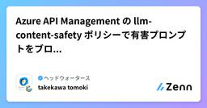
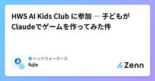
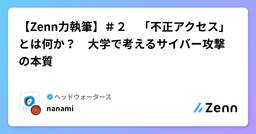
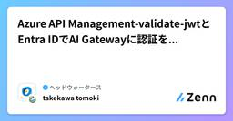
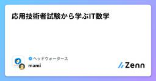

ヘッドウォータースのフィード
https://zenn.dev/p/headwaters
株式会社ヘッドウォータースのテックブログです。 AIエージェント、生成AI、Azure、GitHub Copilot、IoT、XR系などData&AIとApp modernizeに関して幅広く投稿します！
フィード

【Zenn力執筆】＃３ シャットダウンではなく遮断措置？ 踏切の遮断機の目的とは
ヘッドウォータースのフィード
はじめにまずはこちらをご覧ください。BLACKPINKの『Shut Down』です。動画リンク:https://www.bing.com/ck/a?!&&p=5955afbe992d2b0840abfa39954cfeb4fd08c05e9d6dea4e721ee87d413063bfJmltdHM9MTc4NDc2NDgwMA&ptn=3&ver=2&hsh=4&fclid=0b715a31-9834-6602-32b8-4d1799d06762&u=a1L3ZpZGVvcy9yaXZlcnZpZXcvcmVsYXRlZ...
8時間前

Azure API Managementでモデルの call 数・token数を制限する
ヘッドウォータースのフィード
執筆日2026/7/23 やることAzure API Management（以下、APIM）のAI Gatewayについて勉強しています。前回、APIMを使ってMicrosoft Foundryのモデルをcallすることができました。今回は、そのcall数とtoken数を制限する方法を実装しようと思います。 前提Azure API Management BasicMicrosoft Foundryをデプロイ済みであること。以下記事「API Management経由でMicrosoft FoundryのモデルをCallする」を実装済みであること。https...
1日前

Agentic RAG実装ガイド：LangGraph×Azure AI Searchで通常RAGとの違いを実データで検証
ヘッドウォータースのフィード
はじめに「RAGは知っている。でも Agentic RAG って何が違うの？」そう思っている方に向けた記事です。概念や図解での説明はよく見かけます。しかし「結局どれくらい賢くなるのか」は実際に動かして比較してみないと実感が湧きません。そこで本記事では同じ質問を通常RAGとAgentic RAGの両方に投げます。そして結果を並べて比較する構成を取っています。Azure環境がある場合: 7章で実装する main.py を1回実行するだけで、通常RAG・Agentic RAGそれぞれの回答と再検索回数の比較が出力されますAzure環境がなくても試したい場合: 8章ではAzur...
2日前

Azure API Management の llm-content-safety ポリシーで有害プロンプトをブロックする方法
ヘッドウォータースのフィード
執筆日2026/7/22 はじめにAzure API Management（APIM）を LLM のゲートウェイに置き、llm-content-safety ポリシーで Azure AI Content Safety に問い合わせて、有害プロンプトを LLM に届く前にブロックする構成を試してみます。アプリのコードには一切手を入れず、ゲートウェイ側で一元的に防御できるのがポイントかなと。→ 攻撃的なプロンプトを投げると、LLM に到達する前に APIM が 403 を返す 参考記事https://learn.microsoft.com/ja-jp/azure/api...
2日前

HWS AI Kids Club に参加 ― 子どもがClaudeでゲームを作ってみた件
ヘッドウォータースのフィード
全社でAIを使い倒す、という方針Headwatersでは「FY2027に生産性2倍」を目指して、全社でAIを使い倒す方針を掲げています。私が所属する技術戦略推進事業部では、このAI推進を担当していて、開発チームだけでなくミドルオフィス・バックオフィスまで含めて、全社に広げる活動をしています。合言葉はシンプルな3つ。!いち早くキャッチ ― 次々登場する新しいAIをすぐ検証し、「必要最適解」を探し続ける適材適所 ― 用途ごとに最適なAIを選び、組み合わせて使い分ける全社で実践 ― 開発・ミドルオフィス・バックオフィス、すべての業務でAIを活用する外部AIとしてMicro...
3日前

【Zenn力執筆】＃２ 「不正アクセス」とは何か？ 大学で考えるサイバー攻撃の本質
ヘッドウォータースのフィード
はじめに「よっしゃー！いくぞー！タイガー！ファイヤー！サイバー！ファイバー！ダイバー！バイバー！ジャージャー！」ヲタクの本能が目覚めてしまった人は、正直に挙手してください。……ところで、このコールにも出てきた「サイバー」という言葉。普段何気なく聞いている言葉ですが、「サイバーとは何か説明して」と言われたときに、意外とちゃんと説明できない人も多いのではないでしょうか。「サイバー攻撃」という言葉はよく耳にします。しかし、サイバーって何？サイバー空間って何？不正アクセスって結局何が問題なの？と聞かれると、自信を持って説明できる人は意外と少ないかもしれません。...
3日前

Azure AI Content Safety - ブロックリストの作り方
ヘッドウォータースのフィード
執筆日2026/7/21 やることAzure AI Content Safety のブロックリストをPythonで作成し、登録したワードがテキスト中に含まれるかを判定するところまでを実施しようかなと。 参考資料https://learn.microsoft.com/ja-jp/azure/ai-services/content-safety/how-to/use-blocklist?tabs=windows%2Cpython 前提Azure AI Content Safetyをデプロイ済みであること ライブラリー必要なライブラリを入れます。pip in...
4日前

Azure API Management-validate-jwtとEntra IDでAI Gatewayに認証をかける方法
ヘッドウォータースのフィード
執筆日2026/7/20 やることAzure API Management（以下、APIM）のAI Gatewayについて勉強しています。今回は、Microsoft Entra IDを使ったJWT検証（validate-jwt）によってAPIを保護し、認証済みのリクエストのみAPIMを通過できるようにします。 前提Azure API Management BasicMicrosoft Foundryをデプロイ済みであること以下記事「API Management経由でMicrosoft FoundryのモデルをCallする」を実装済みであること。https:...
5日前

Azure API ManagementのAI GatewayでMicrosoft Foundryを呼び、IP Filterで制御する
ヘッドウォータースのフィード
執筆日2026/7/19 やることAzure API ManagementでAI Gatewayを構築しようと思っています。ただ、そもそもAI Gatewayで何ができるのか、正直よくわかっていません。Docsを読むだけではイメージが掴めなかったので、実際に構築しながら学んでいくことにしました。今回は、I GatewayでMicrosoft Foundryを呼び、IP Filterで制御しようかなと思います。 前提Azure API Managent BasicMicrosoft Foundryをデプロイ済みであること API ManagementのAI...
6日前

応用技術者試験から学ぶIT数学 1
1
ヘッドウォータースのフィード
カルノー図から理解する論理式の簡略化 はじめにヘッドウォータースでは資格勉強会を毎週水曜日7:00から1時間開催しています。現在は応用情報技術者試験の資格取得に向けてチームでがんばっています！毎週やった問題の解説や数学とITの関係ついて解説してみなさんの参考にしていただければ幸いです。応用情報技術者試験では論理回路やカルノー図が頻繁に出題されます。しかし「カルノー図の書き方だけ覚えた」だけではイマイチ意味を理解できていない問題があります。この記事では高校数学集合と命題指数対数数列・漸化式確率・統計ベクトル行列微分積分大学数学離散数学グラ...
7日前

Databricks Genie エージェントがすごく優秀という話
ヘッドウォータースのフィード
なぜか記事が少ないGenie Space/GenieエージェントDAIS2026以降、Databricks は Genie Ontology・Lakebase・Omnigent といった最先端の話題で盛り上がっています。どれも面白いのですが、今回はあえて、Genie エージェント単体をまとめておきます。https://learn.microsoft.com/ja-jp/azure/databricks/genie-agents/世間が盛り上がっているのに逆行しているように見えてしまうのですが、これはアップデートが早すぎるDatabricksがおかしいのです。Genieエージェン...
8日前
GPT-Redとは？OpenAIが公開した「AIを攻撃するAI」の仕組みを解説
ヘッドウォータースのフィード
2026年7月15日、OpenAIは GPT-Red を公開しました。https://openai.com/index/unlocking-self-improvement-gpt-red/GPT-Redは、AIをより安全にするために、AI自身が攻撃を行うレッドチーミングシステムです。従来は人間が担っていたセキュリティテストの一部を自動化し、より多くの攻撃パターンを発見できるようにすることを目的としています。なお、GPT-RedはChatGPTやAPIで提供されるモデルではなく、OpenAI内部でAIモデルの安全性を評価・強化するためのレッドチーミングシステムとして運用されていま...
9日前
Azure Data Factoryを使ってBlobのデータを別のBlobに転送するPipelineを作成する
ヘッドウォータースのフィード
執筆日2026/7/15 やること最近、Azure Data Factoryを使う機会がありました。FabricのData Factoryは使った経験はありますが、Azure Data Factoryは未経験。まずはチュートリアル的にBlob間のデータの転送のPipelineを実装しようかなと。 前提条件Azure Data Factoryを構築Azure Blob Storageを2つ構築。コンテナーも構築。※import元のBlob Storageのコンテナーに.jsonファイルを置いておく。 手順Azure Data Factory を開くA...
10日前
一人前のエンジニアなら、そもそもPRを出すな。
ヘッドウォータースのフィード
はじめに昨日の夜に投稿された 一人前のエンジニアなら、PRでコメントをもらうな。 を拝読した。（めちゃくちゃいい記事です。先に読んでください。）先に言っておくと、僕はこの記事に大筋で深く頷いている。「AIには何度でもレビューさせられる。疲れない。機嫌を損ねない」から自分で十周まで検証しろ、というのはまったくその通りだし、「レビュー者を二人目の実装者として使うな」という倫理観も正しい。理想だと思う。だからこそ、あえてアンサーを書きたい。一点だけ、うまく飲み込めないものが喉に残ったからだ。この記事は実装者の責任を極限まで明確にし、厳しく追及する。その厳しさ自体は正しい。でも「責...
10日前
一人前のエンジニアなら、PRでコメントをもらうな。
ヘッドウォータースのフィード
前提これは、コードレビューの絶対的な正解や、チーム全体に強制すべきルールを示す記事ではありません。私がエンジニアとしてどうあるべきだと考えているか。他人の時間をどれだけ重く扱うべきだと考えているか。それを言語化した、個人の職業倫理です。本文に出てくる「お前」には、まず私自身が含まれていることをご認識おきください。自分だけを例外にして、他人を殴るための記事ではありません。私はこうありたいし、一人前を名乗る自分にはこの水準を要求する前提としてご高覧ください。 一人前のエンジニアなら、PRでコメントをもらうな。コードの不備、考慮漏れ、テスト不足、調査不足、説明不足。AIに聞け...
10日前
RAGの評価を数値で測る：Ragasで改善サイクルを回す入門ガイド
ヘッドウォータースのフィード
はじめに：「なんとなく良くなった気がする」から卒業しようRAGを実装したあと、こんな経験はないでしょうか？検索手法を変えたけど、本当に良くなったのかよくわからないチャンクサイズを調整したが、感覚で「たぶん良くなった」と判断している複数の手法を試したが、どれが一番効いているか比べられていないこの記事では、評価ライブラリ Ragas を使って「検索の質」と「回答の質」を数値で記録・比較する方法をステップバイステップで解説します。Phase 1〜4でベクトル検索・全文検索・再ランキング・クエリ変換など複数の手法を実装してきました。この記事（Phase 5）では、それらの手...
11日前
AIに討論させたら、自分の視野が広くなった話
ヘッドウォータースのフィード
はじめに何かを決めようとするとき、自分ひとりで考えていると視野が狭くなりがちだなと思うことがあります。「この選択、本当に正しいのかな？」という不安を抱えたまま決断してしまうことも。そこで思いついたのが、AIに複数の立場から討論させてみるというアイデアです。賛成派・反対派・第三者といった役割を持ったAIエージェントが、あるテーマについてリアルタイムに議論を繰り広げる。そのやりとりを眺めることで、自分では気づけなかった視点や論点が浮かび上がってくるかもしれない、という発想です。 作ったものLLM討論ライブビューアと名付けたシンプルなWebアプリです。左のパネルにトピックを入...
11日前
Databricksによる機械学習ワークフローの実践 — NYCタクシーデータを用いた運賃予測モデルの構築と評価
ヘッドウォータースのフィード
Databricksによる機械学習ワークフローの実践 — NYCタクシーデータを用いた運賃予測モデルの構築と評価 目次データプラットフォームとしてDatabricksを選択する意義使用データセットおよび目的変数データ前処理特徴量エンジニアリングおよびデータ分割モデル訓練および評価指標による比較検証総括と今後の展望本記事では、Databricks の環境を活用し、機械学習の標準的なワークフロー（探索的データ分析、特徴量エンジニアリング、複数モデルの訓練および評価）を実践した検証内容についてまとめました。 1. ...
11日前
Microsoft Agent Framework - ハーネスエージェントを作ってみる
ヘッドウォータースのフィード
執筆日2026/7/11 はじめにMicrosoft Agent Frameworkのpython-1.11.0で、create_harness_agentが登場しました。https://github.com/microsoft/agent-framework/releases/tag/python-1.11.0Microsoft Agent Frameworkのcreate_harness_agentは、チャットクライアントを渡すだけでTODO管理やプラン/実行モード、Web検索などを備えたエージェントを組み立ててくれるそうです。 参考資料https://lear...
14日前
Microsoft Agent FrameworkのエージェントをMCPサーバー化する方法
ヘッドウォータースのフィード
執筆日2026/7/10 やることMicrosoft Agent Frameworkで作成したエージェントをMCPサーバー化しようかなと。 はじめにMicrosoft Agent Framework(以下 MAF)で作った Agent は、as_mcp_server() を呼ぶだけでそのまま MCPサーバーのツール として公開できます。 セットアップrequirements.txtpip install agent-framework --prepip install python-dotenv エージェントを作る高タンパクレシピを検索するエージェン...
15日前